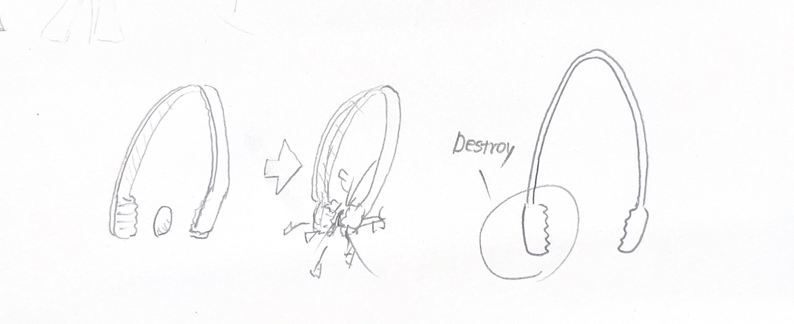
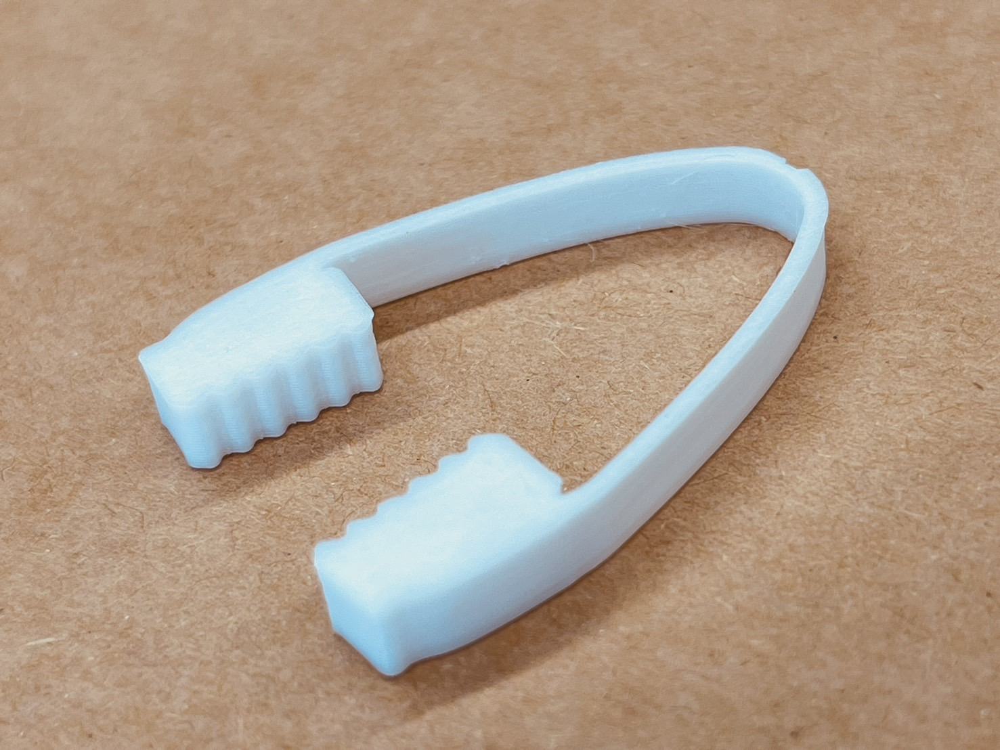
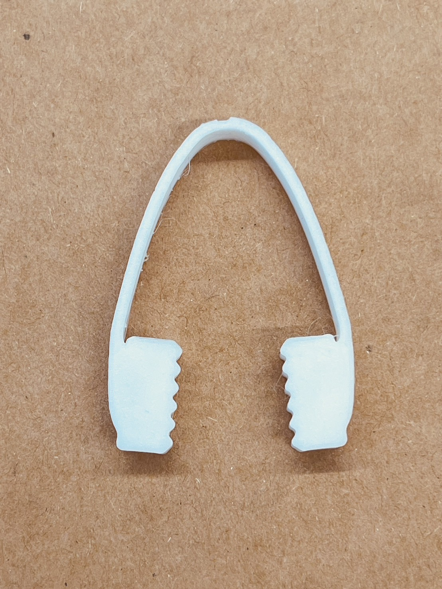
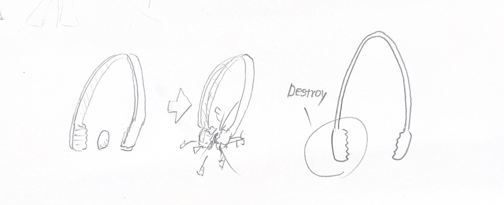
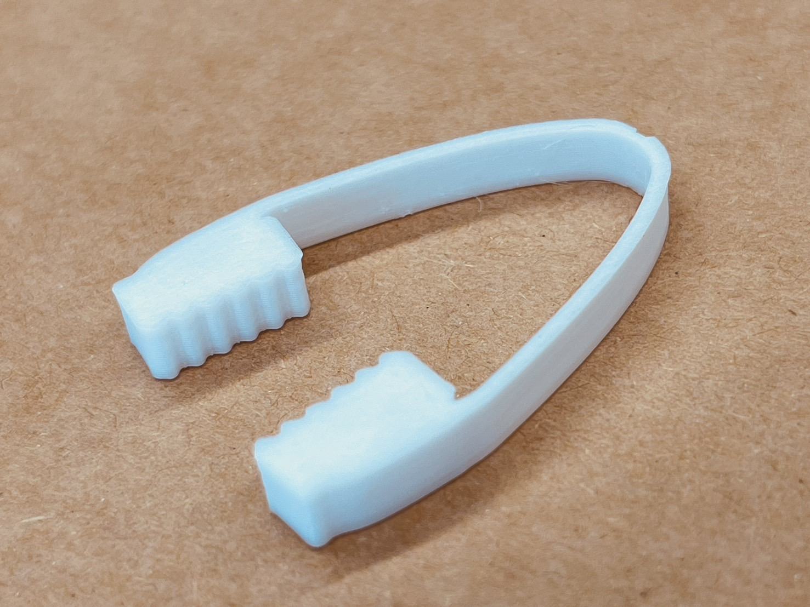
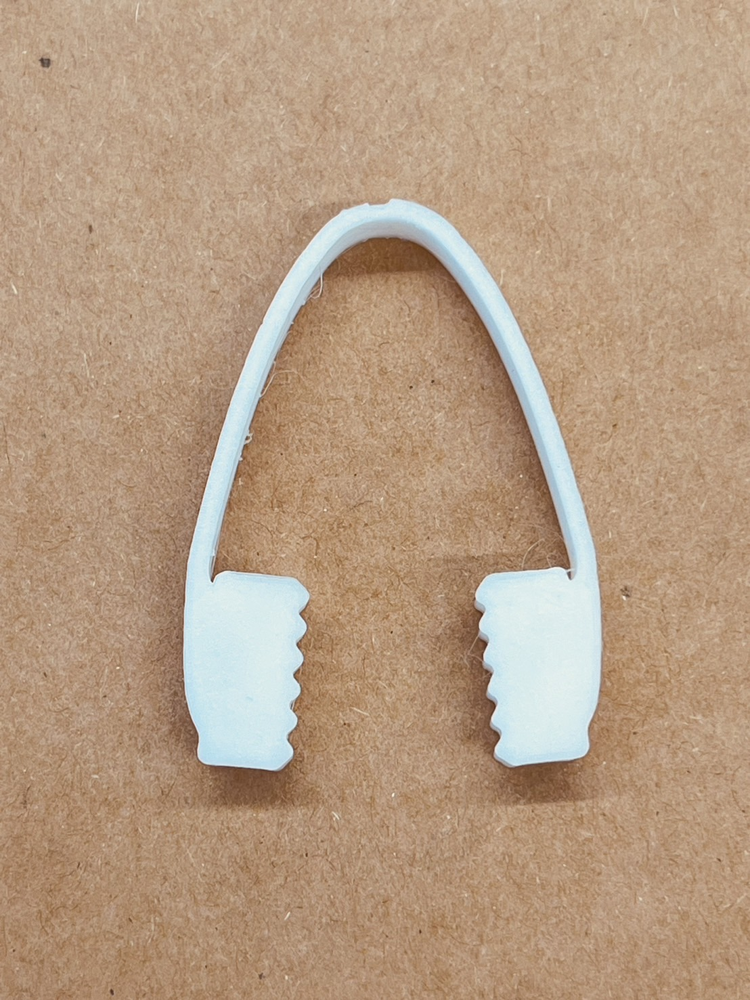
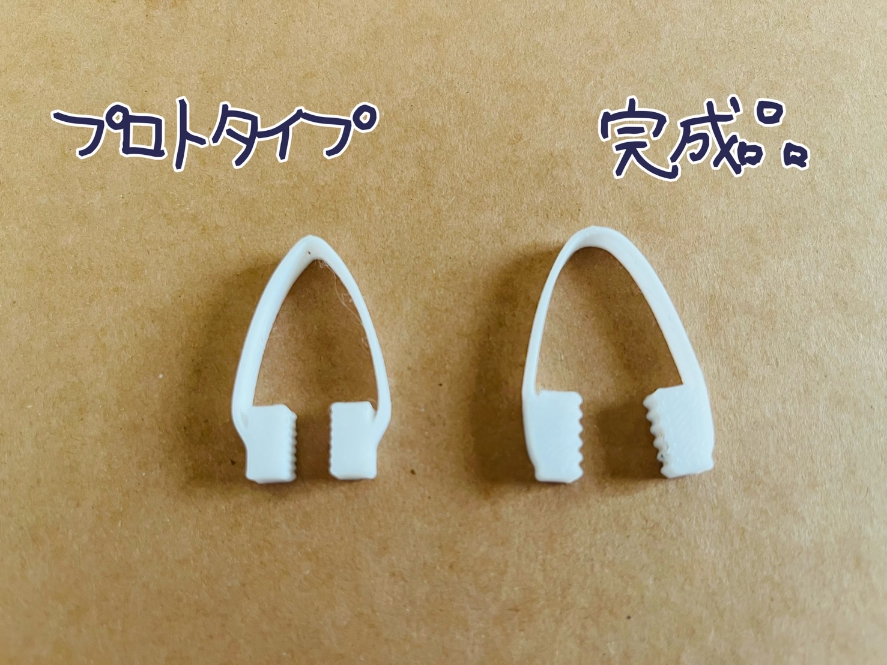
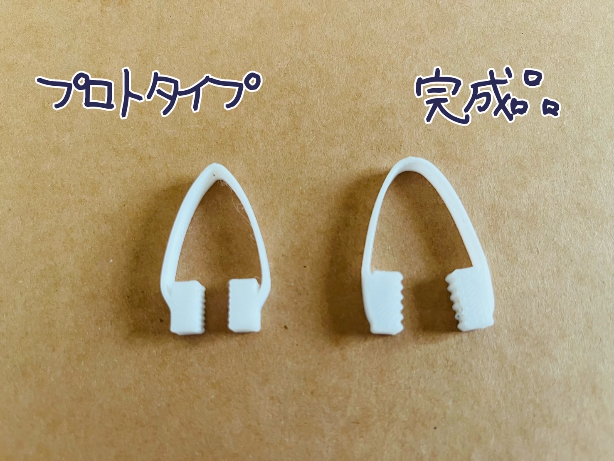

はじめに
みなさまもご存じの通り、一般的なピンセットは先端が細い形状で、繊細な作業を得意としています。
私も最初は、機能面はそのままでおもしろい装飾を施したピンセットを作ろうと考えていました。
しかし、私は思いました。先端だけやけにでかい大雑把で破壊的なピンセットが存在してもいいのではないか、と。
ということで、3Dプリントを活用し、私なりの進化系ピンセット「破壊ピンセット」を作成してみました。
私も最初は、機能面はそのままでおもしろい装飾を施したピンセットを作ろうと考えていました。
しかし、私は思いました。先端だけやけにでかい大雑把で破壊的なピンセットが存在してもいいのではないか、と。
ということで、3Dプリントを活用し、私なりの進化系ピンセット「破壊ピンセット」を作成してみました。
スケッチ＆完成品
まずはスケッチをして完成イメージを固めます。
よく見るピンセットの形状をもとに、先端部分だけ親の仇のようにでかくしていきます。破壊衝動を開放しましょう。

このスケッチをもとに、Fusionを使用しモデルを作成、3Dプリンターで実際にプリントしてみました。
なかなか納得のいくモデルができなかったり、3Dプリンターと格闘したりもしましたが、無事に完成まで漕ぎつけました。
最終的に完成した破壊ピンセットがこちらになります！



およその大きさは横26mm×縦37mm×高さ5mmとコンパクト。
しかし、先端部は大きくギザギザした形状になっており、しっかりと破壊することができます。えらい。
また、先端部には少し角度がついた設計で、快適な破壊を楽しめるように作られているのもポイントです。
破壊ピンセットを実際に使用している様子もご覧ください。破壊、できているのでしょうか...？
よく見るピンセットの形状をもとに、先端部分だけ親の仇のようにでかくしていきます。破壊衝動を開放しましょう。

このスケッチをもとに、Fusionを使用しモデルを作成、3Dプリンターで実際にプリントしてみました。
なかなか納得のいくモデルができなかったり、3Dプリンターと格闘したりもしましたが、無事に完成まで漕ぎつけました。
最終的に完成した破壊ピンセットがこちらになります！


およその大きさは横26mm×縦37mm×高さ5mmとコンパクト。
しかし、先端部は大きくギザギザした形状になっており、しっかりと破壊することができます。えらい。
また、先端部には少し角度がついた設計で、快適な破壊を楽しめるように作られているのもポイントです。
破壊ピンセットを実際に使用している様子もご覧ください。破壊、できているのでしょうか...？
設計ファイル＆あとがき
設計ファイル：破壊ピンセット（stlファイル）
今回の課題を通して学んだことは大きく２つあります。
ひとつは、試行錯誤をすることは本当に大事だということ。失敗を恐れず、トライアンドエラーの精神でどんどんアイデアを形にしましょう。
実は、この破壊ピンセットにはプロトタイプがいくつか存在します。その一つと完成品と比べてみると、サイズ感や形状がかなり違います。
実際にプリントしてみなければ間違いなく気づけなかった問題点がたくさんあります。実際に形にしてみることは本当に大事です。マジです。
 もうひとつは、ファブラボはとてもいい場所だということです。声を大にして言いたい！まったく敷居は高くない！！
スタッフの方は優しく、アダプタ類も利用できて、居心地のいい雰囲気。ぜひ恐れずに足を運んでほしいです！
ひとつは、試行錯誤をすることは本当に大事だということ。失敗を恐れず、トライアンドエラーの精神でどんどんアイデアを形にしましょう。
実は、この破壊ピンセットにはプロトタイプがいくつか存在します。その一つと完成品と比べてみると、サイズ感や形状がかなり違います。
実際にプリントしてみなければ間違いなく気づけなかった問題点がたくさんあります。実際に形にしてみることは本当に大事です。マジです。
 もうひとつは、ファブラボはとてもいい場所だということです。声を大にして言いたい！まったく敷居は高くない！！
スタッフの方は優しく、アダプタ類も利用できて、居心地のいい雰囲気。ぜひ恐れずに足を運んでほしいです！
以上、破壊ピンセットを紹介いたしました。よい破壊ライフを。